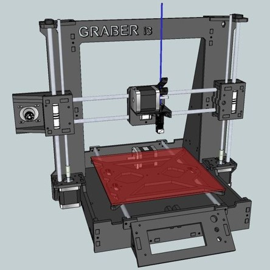
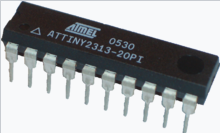

Ласкаво просимо!
Привіт, я - Андрій. Я програміст із захопленням у різних областях, таких як електроніка, схемотехніка, радіо, розробка пристроїв на мікроконтролерах та 3D друк на FDM принтері. Моя мета - поєднати своє хобі з роботою та розробляти цікаві проекти.
 